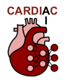

Research domains
While I have contributed to several research domains my mission is via machine learning and computer vision (image analysis) to help diagnose and understand disease and provide food for everyone.
The population increase exerts tremendous pressure on our healthcare systems and agricultural needs. Imaging methodologies are increasingly used to aid diagnoses and to build image-driven physiological models in the natural and life sciences. However, the explosion of the amount of data cannot be met by the current approaches used to analyze the generated images/volumes/movies and unravel the complicated patterns that exist. Our mission, is to address these limitations by integrating the state of the art in computer vision, and machine (deep learning) learning. Our unique approach has the potential to provide efficient and affordable solutions towards sustainable healthcare systems and agriculture, of immense benefit and importance to society.
Challenge 1: Population increase puts pressure on our healthcare systems

Every day thousands of people are born in the under-developed world without access to basic healthcare, while at the same time in the developed world, the population is ageing with an increasing cost of access to good healthcare. We need new imaging and image analysis methods to help bring down the cost of image-based diagnostics, help unravel the mysteries behind several killer diseases, and eventually predict onset of disease.
We work on several aspects of medical image analysis, but central to our approach is the problem of representation learning and trying to `do more with less', by building algorithms that can leverage unsupervised data (semi-supervised learning) and also the relationship between different tasks (multi-task learning).
Challenge 2: Population increase puts pressure on our planet's sustainability and agricultural needs
 Remarkably we seem to worry so much about our well being and health, but we are forgetting that without access to food and water, we cannot survive. The rapidly increasing human population combined with the "threat" of global warming, necessitate that we increase food production, reduce our carbon footprint, decrease waste and chemical pollution, and discover alternative sources of energy and materials.
Remarkably we seem to worry so much about our well being and health, but we are forgetting that without access to food and water, we cannot survive. The rapidly increasing human population combined with the "threat" of global warming, necessitate that we increase food production, reduce our carbon footprint, decrease waste and chemical pollution, and discover alternative sources of energy and materials.
Plants have always been a crucial source of food, feed, fiber, and fuel and thus the agriculture industry reflects a large portion of economic output. Together with the breeding industry, researchers try to identify, improve, and breed key traits to satisfy the growing demands, increase resistance to parasites and diseases, reduce environmental impact (less water, less fertilizer), always striving for a more sustained agriculture.
Our group has consistently contributed with open data, open software and hardware frameworks (Phenotiki), and robust and innovative algorithms to the problem of estimating phenotypic traits from images.